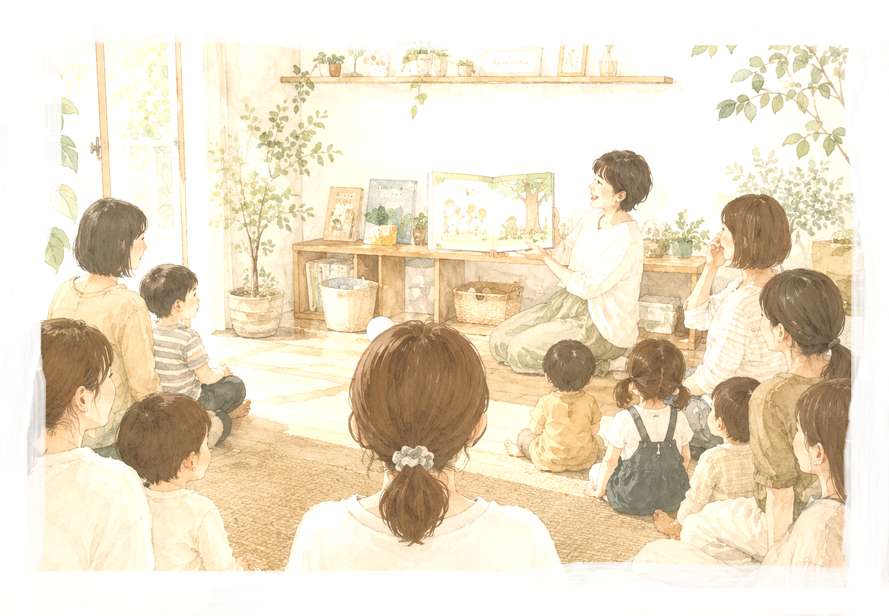

ごあいさつGreeting
お子さまはもちろん、いつも読み聞かせしている大人にも
絵本を読んでもらう喜びや、癒しを感じていただけます
音楽と絵本が奏でるハーモニーで思い出に残るひとときを
お子さまはもちろん、いつも読み聞かせしている大人にも
絵本を読んでもらう喜びや、癒しを感じていただけます
音楽と絵本が奏でるハーモニーで思い出に残るひとときを

私自身が子育てに悩んでいるころに
絵本に音楽をのせた、
読み聞かせに出会い、
涙が止まらなくなる経験をしました。
私も子育てを頑張る方々の
心に届く絵本をお伝えしたいと、
２０２０年から
各地の子育て施設で活動しております。
※講師は現役で保育園に勤務している栄養士です。
ご希望があれば、コンサート後に離乳食の相談を受けさせて頂きます。
※講師は現役で保育園に勤務している栄養士です。
※交通費はご負担いただきます。
ご希望があれば、コンサート後に離乳食の相談を受けさせて頂きます。